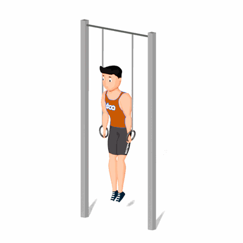

Ring Dip

Esse exercício trabalha o fortalecimento de diversos músculos da região superior do corpo, além de melhorar o equilíbrio e flexibilidade.
Ficha Técnica
Tipo: CrossFit
Grupo Muscular: Corpo
Aparelho: Nenhum
Músculos: Nenhum
Como realizar
- O movimento começa com os braços estendidos, empurre para baixo, até que o peitoral seja projetado para frente, enquanto os cotovelos são movidos para trás;
- Os ombros descem abaixo da linha dos cotovelos;
- As mãos ficam próximas ao corpo;
- O final do movimento é representado pela extensão completa dos cotovelos.
 RC STORE
RC STORE